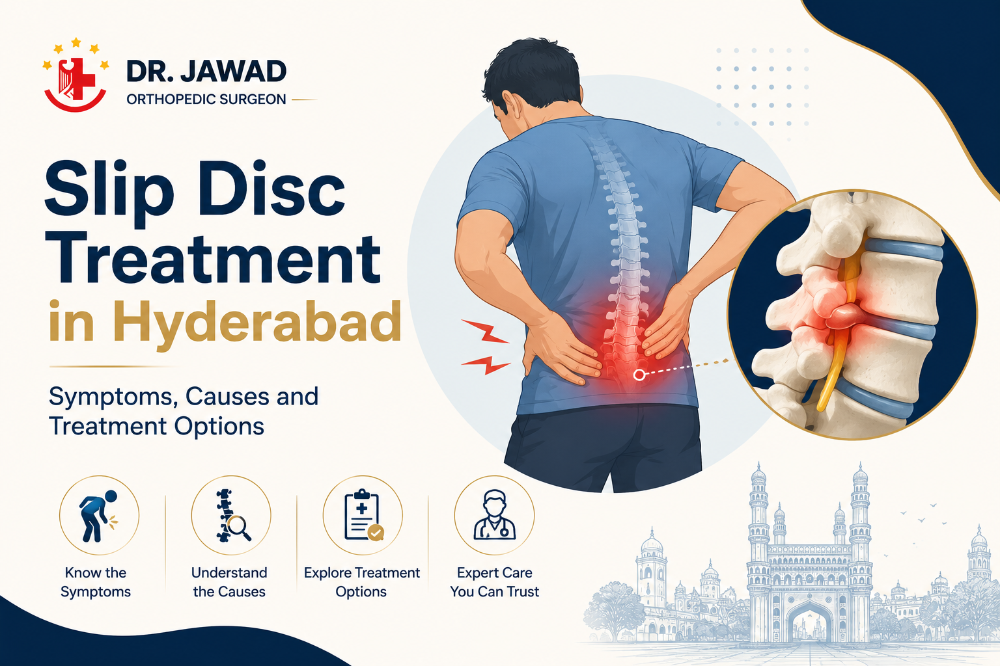

Medically Reviewed by
DR. MIR JAWAD ZAR KHANMBBS, MS - Orthopedic
M.CH-(Ortho) Joint
Replacement surgeon
Slip Disc Treatment in Hyderabad: Symptoms, Causes and Treatment Options
A slip disc is one of the most common spine problems and one of the most misunderstood. The name alone worries people, who often assume it means major surgery or lasting disability. In reality, most slip discs are treated successfully without surgery. This guide explains what a slip disc actually is, the symptoms it causes, and the full range of treatment options available in Hyderabad, from simple conservative care to minimally invasive surgery when it is genuinely needed.
What Is a Slip Disc?
Between each pair of bones in the spine sits a soft, cushioning disc that acts as a shock absorber. A slip disc, more accurately called a herniated or prolapsed disc, happens when the soft inner part of one of these discs pushes out through a weak spot in its tougher outer layer.
Despite the name, the disc does not actually slip out of place. The problem is that the bulging material can press on a nearby spinal nerve, which is what causes pain. Slip discs are most common in the lower back, which is why they often produce pain that travels into the legs, but they can also occur in the neck.
Symptoms of a Slip Disc
The symptoms depend on where the slip disc is and which nerve it affects. Common signs include:
- Back or neck pain, depending on the location of the affected disc.
- Pain that radiates into an arm or leg when a nerve is compressed.
- Tingling, a pins-and-needles feeling, or numbness in the limb.
- Muscle weakness in the affected arm or leg.
- Pain that worsens when sitting, coughing or sneezing.
When a slip disc in the lower back presses on the sciatic nerve, it produces sciatica. The two are closely linked, which we explain further in our guide on telling sciatica from a slip disc.
What Causes a Slip Disc?
Slip discs often develop from a combination of age-related wear and strain. As we get older, the discs lose some of their water content and flexibility, which makes them more prone to tearing or bulging. Lifting heavy objects with poor technique, sudden awkward movements, prolonged sitting with poor posture, and excess body weight all increase the risk.
This is why slip discs are becoming more common among younger, desk-bound professionals, a trend we explore in our article on desk-job back pain.
Non-Surgical Slip Disc Treatment
The great majority of slip discs improve with conservative treatment. The main options are:
Rest and Activity Modification
A short period of reduced activity in the early painful phase, followed by a gradual return to movement, helps the disc settle. Prolonged bed rest is avoided as it can slow recovery.
Physiotherapy
Targeted exercises strengthen and support the spine, relieve pressure on the nerve and improve flexibility. This is central to slip disc recovery.
Medication
Anti-inflammatory medicines and pain relievers control pain and inflammation while the disc heals.
Pain Management Procedures
Where pain persists, targeted procedures can reduce inflammation around the affected nerve without surgery.
When Is Surgery Needed for a Slip Disc?
Surgery becomes an option only when conservative treatment has not relieved the pain after a reasonable period, when pain is severe and persistent, or when there is significant nerve compression causing weakness. The most common procedure is a microdiscectomy, a minimally invasive operation that removes just the portion of the disc pressing on the nerve, usually allowing a rapid recovery.
As with sciatica, loss of bladder or bowel control alongside back and leg pain is a medical emergency and needs immediate attention.
Slip Disc Recovery Timeline
Most people with a slip disc improve steadily over several weeks of conservative treatment. Early on, the focus is on controlling pain and gently maintaining movement. As symptoms settle, physiotherapy builds strength and flexibility to support the spine and reduce the chance of recurrence.
If a minimally invasive procedure such as a microdiscectomy is needed, recovery is usually quicker than people expect, with many returning to light activity within a couple of weeks and following a guided rehabilitation plan from there.
Protecting Your Spine and Preventing Recurrence
Once a slip disc has settled, protecting the spine reduces the risk of it happening again. Using correct lifting technique, bending at the knees rather than the waist, and avoiding twisting while carrying weight all help.
Regular core and back strengthening, good posture, frequent breaks from long periods of sitting, and maintaining a healthy weight give the spine the support it needs. These habits are simple but genuinely effective at keeping the back healthy.
Frequently Asked Questions
Can a slip disc heal without surgery?
Yes. The great majority of slip discs improve with non-surgical treatment such as physiotherapy, medication and activity changes. Surgery is needed only in a minority of cases.
What should I avoid with a slip disc?
Avoid heavy lifting, twisting movements, and long periods of sitting with poor posture during recovery. Your specialist will give guidance suited to your stage of healing.
How long does slip disc recovery take?
Many people improve over several weeks with conservative care. Recovery after a minimally invasive procedure is often quicker, guided by a physiotherapy plan.
Is a slip disc the same as sciatica?
No. A slip disc is a physical change in the spine, while sciatica is the nerve pain it can cause when it presses on the sciatic nerve. One often leads to the other.
Conclusion
A slip disc happens when a spinal disc bulges and presses on a nearby nerve, causing back pain and often radiating pain into a limb. The reassuring news is that most slip discs are treated successfully without surgery, through physiotherapy, medication and activity changes. Surgery, when needed, is usually minimally invasive with a quick recovery. An accurate diagnosis and an early, step-by-step approach give the best results.
Book a Slip Disc Consultation in Hyderabad
If back pain or a suspected slip disc is affecting your life, Dr. Jawad at Germanten Hospitals, Attapur, offers expert diagnosis and mostly non-surgical treatment. Call 9989635555 to book a consultation.
Call 9989635555

DR. MIR JAWAD ZAR KHAN
MBBS, MS - Orthopedic, M.CH-(Ortho) Joint Replacement Surgeon
As the visionary Chairman and Managing Director of Germanten Hospitals, Hyderabad, Dr. Mir Jawad Zar Khan brings over two decades of surgical leadership to the field. He is dedicated to transforming lives through evidence-based treatments, advanced robotic technology, and a commitment to patient quality of life.